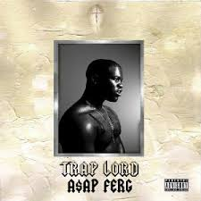

The A$AP is a rap collective that is based out of New York City. The Mob Features a bunch of of solo artists like A$AP Rocky, Ferg, Twelvyy, and Nast. Every year they collaberate to commerate the leader of the A$AP Mob, A$AP Yams who died in 2015. They call these collection of albums "The Cozy Tapes." Both of the currently existing Cozy Tapes feature a multitude of artits.

7/10
I would give this album 7/10 for its use of very clear refrence to his past in New York. This album is not evrything ferg had to offer which is why I gave a 7.
This album was A$AP Ferg's debut album as it was available for purchase in august of 2013. This Album was alought further progressivly for Ferg but did not seem like it was everything Ferg had to offer. The album is pretty consistant stylistically which is part of the reason fo the 7. But I defiately think that this album was good for his first.
8/10
I would Give this album a 9/10 for its use of so many features, change in mood, and aggressive beats.
Still Striving was avilable for purchase in August of 2017. This album really represented the break through for A$AP Ferg in my mind is why I would consider it so good. This album reminds me of the old Ferg, but still brings a more agressive attiitude that was seen before, but reallly not explored as much as he did in this album.